Contents
1. Overview
Dates: May 28 – May 31, 2026
Host City: Sanya, China
SAUVC 2026 will be a 4-day event bringing together teams from across the globe to test their Autonomous Underwater Vehicles in a challenging pool arena.
2. Venues
Please note the multiple locations for this year's event in Sanya:
Location: Aofei Culture & Sports Group Sanya Yazhou Sports Park and Citizen Fitness Centre
Purpose: Registration, Opening Ceremony, Practice Runs, Qualifying Rounds, and Finals.
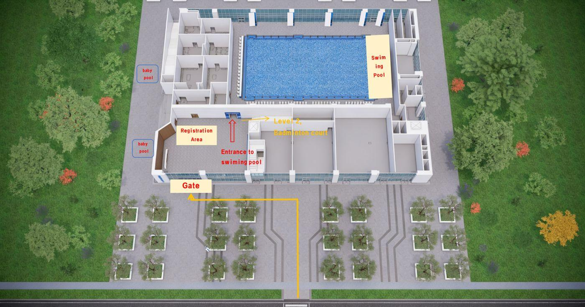
Layout for the Citizen Fitness Centre
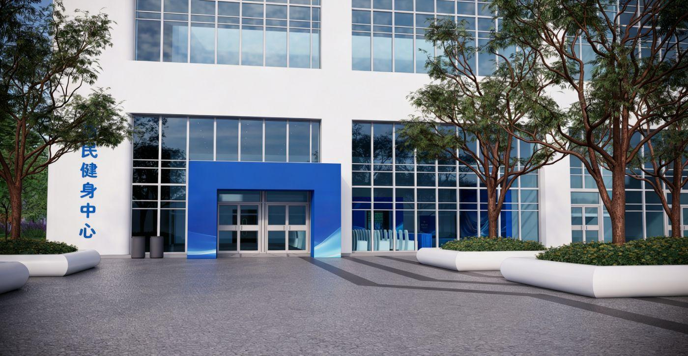
Entrance to Citizen Fitness Centre
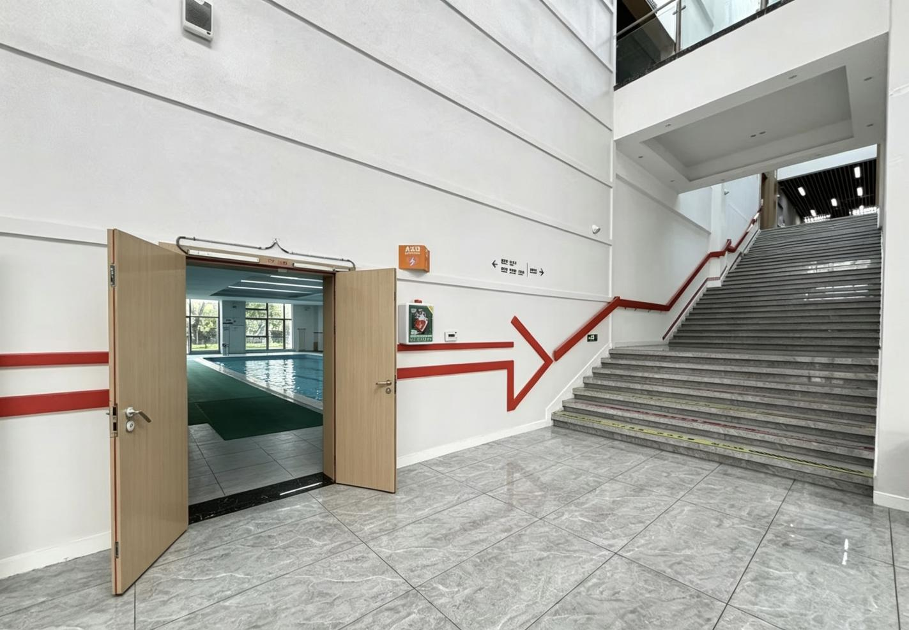
Entrance to the swimming pool
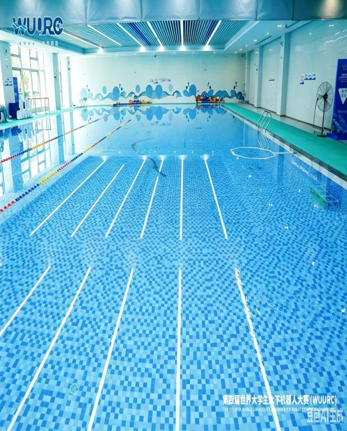
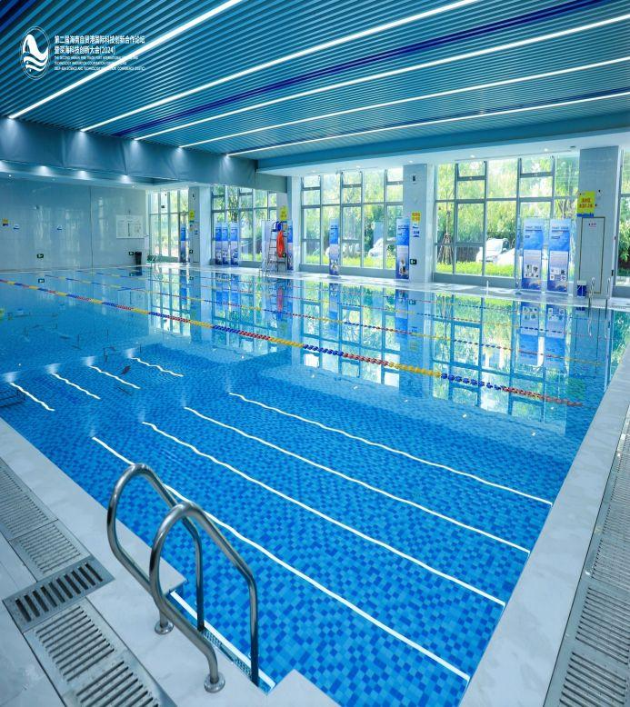
Main pool area where competition and qualification rounds will be held
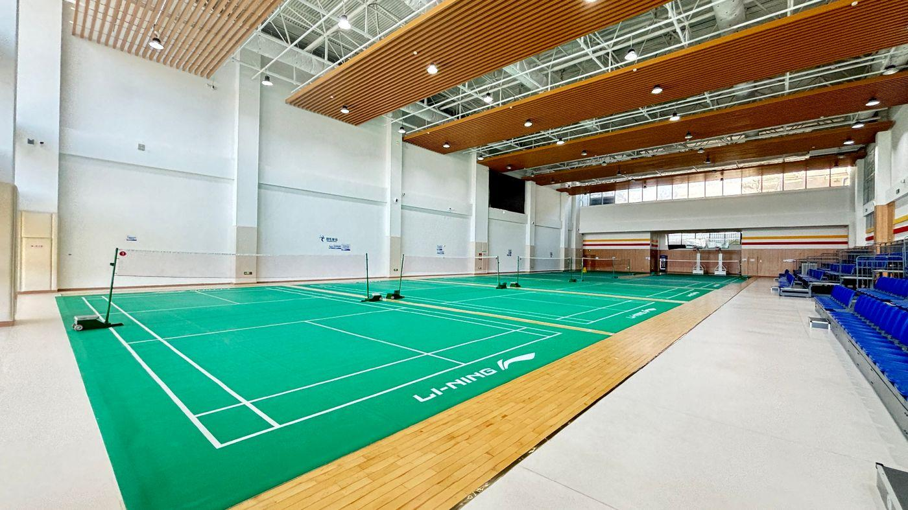
Opening Ceremony and holding area (Level 2 Badminton Court)
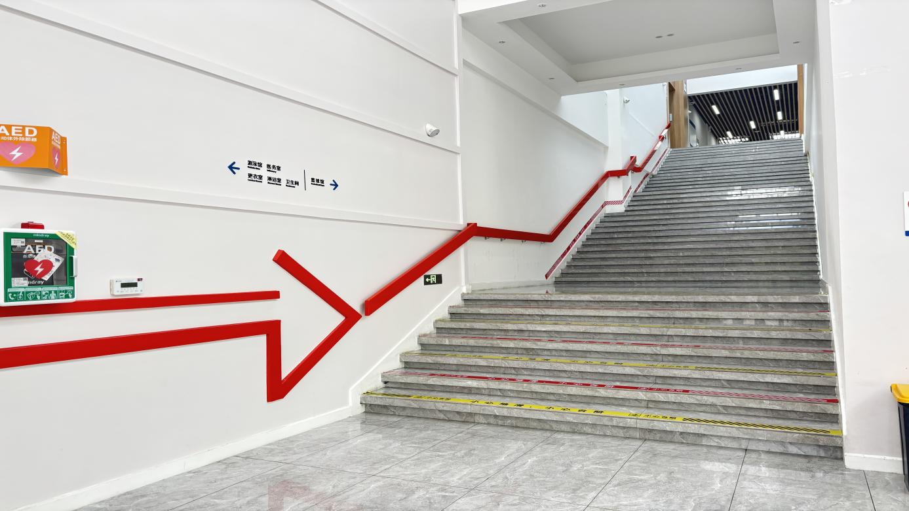
Stairway leading to the opening ceremony and holding area
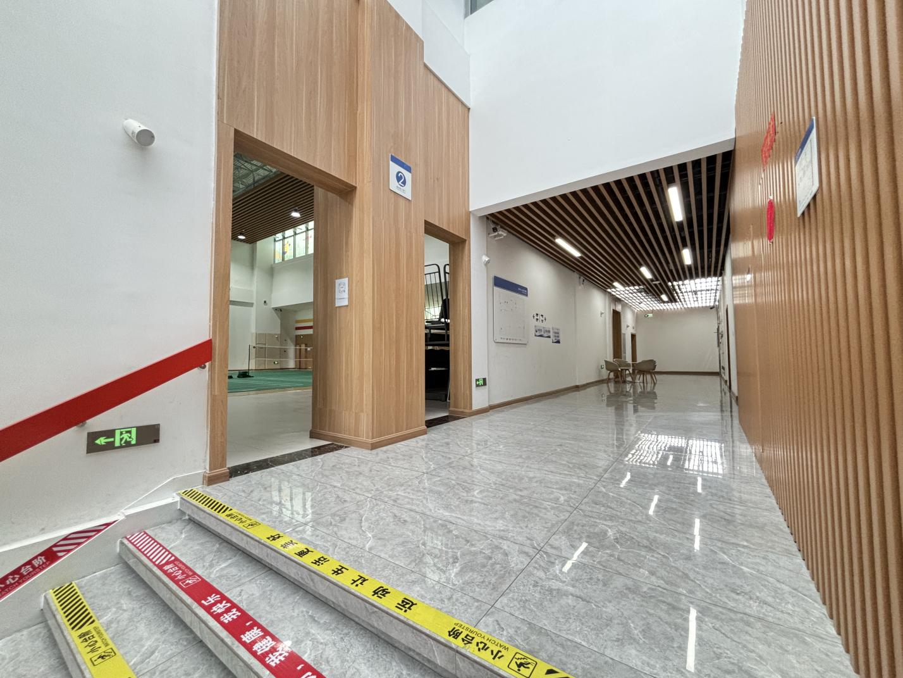
Entrance to the opening ceremony and holding area
Location: Innovation Research Valley Auditorium
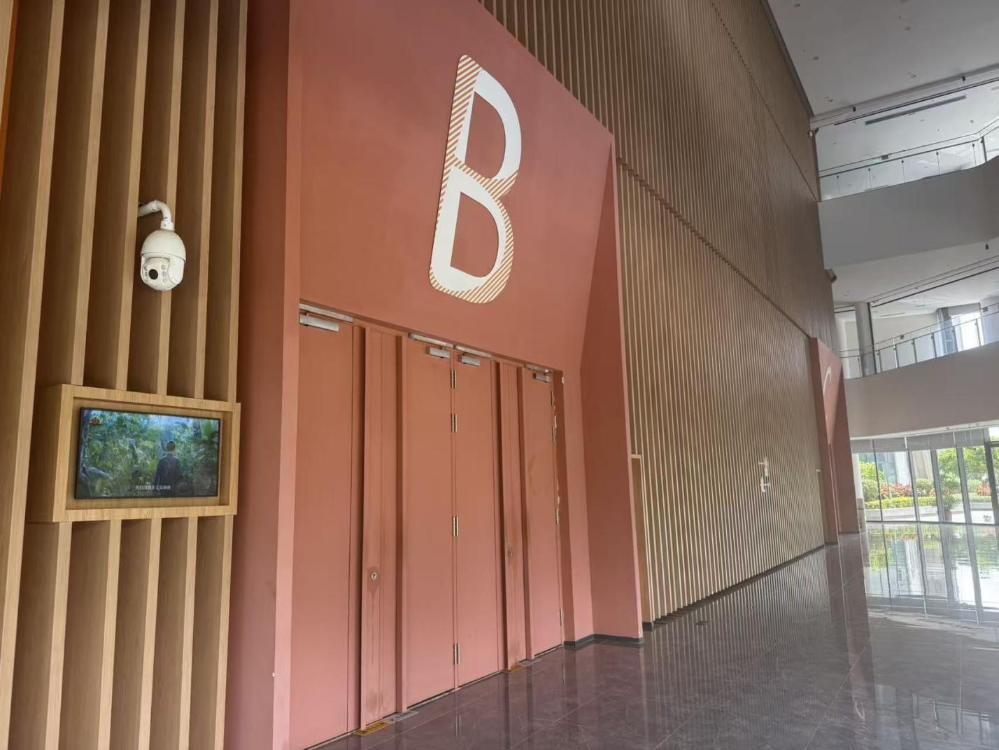
Award Ceremony Venue
Location: Taste of Yazhou Bay · Canteen No.10, Innovation Research Valley Canteen
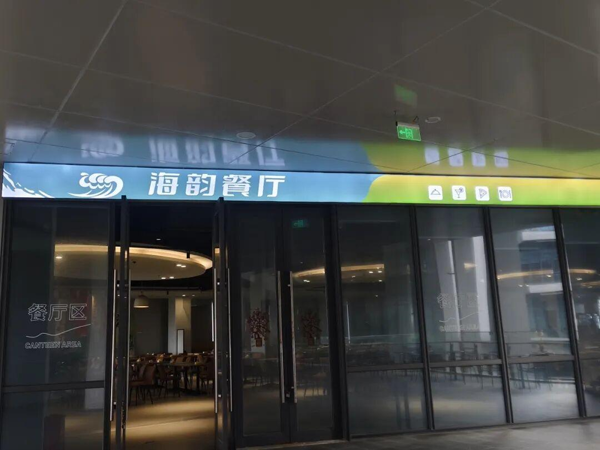
Gala Dinner Venue
3. Program Itinerary
Day 0: 28 May 2026 (Thursday) — Registration Day
| Time | Program | Venue |
|---|---|---|
| 11:00 – 14:00 | Team Registration & Setup | Level 1 (Registration) & Level 2 (Setup) |
| 14:00 – 15:00 | Opening Ceremony, Briefings & Group Photo | Level 2, Badminton Court |
| 15:00 – 19:00 | Baby Pool Practice Sessions | Outdoor, Baby Pool |
Important Notes for Day 0:
- Registration Split: Upon arrival at the hall (Level 1), the Team Lead must stay at the registration desk to confirm member details and make payments for any additional lunch or gala dinner tickets. The rest of the team will be directed to Level 2 to locate their assigned desks and begin setting up their AUV stations.
- Indemnity Forms & Practice Slots: The Team Lead will receive an indemnity form at registration. Every team member must sign this form. Teams can only sign up for a baby pool practice slot with the Slot Masters after the fully completed and signed indemnity form has been returned to the volunteers.
- Briefings & Group Photo: The 2:00 p.m. slot will cover crucial Game and Safety Briefings. A group photo will be taken immediately after these briefings, so please ensure your entire team is present.
Day 1: 29 May 2026 (Friday) — Qualification Day
| Time | Program | Venue |
|---|---|---|
| 09:00 – 12:00 | Qualifying Slots | Level 1, Swimming Pool |
| 12:00 – 12:40 | — LUNCH BREAK — | |
| 12:40 – 18:00 | Qualifying Slots | Level 1, Swimming Pool |
| 09:00 – 18:00 | Baby Pool Practice Slots | Outdoor, Baby Pool |
Qualification Day Rules & Workflow:
- 15-Minute Slots: Each qualification slot is strictly 15 minutes long. Two teams will run their qualification attempts simultaneously in designated zones during each time block.
- Punctuality: Teams must be on time for their slots. If a team is late, the lost time is deducted from their 15-minute window. If a team misses their slot entirely, no replacement slot will be provided.
- Swapping Slots: Teams may swap slots only if another team explicitly agrees to the swap. Any finalized changes must be communicated immediately to the Slot Master and the Judges.
- Baby Pool Practice: The baby pool is available for practice throughout the day. However, teams cannot enter the baby pool freely. You must locate a Slot Master and be assigned a specific practice time block before entering the water.
- Results & Next Steps: Teams will be informed immediately after their 15-minute slot whether they have qualified for the finals. Once qualified, teams can proceed to the Slot Master to book a practice slot for the finals in the baby pool.
- Day 2 Preparations: At the end of Day 1, all finalists will be officially notified and will be randomly assigned a designated practice slot in the main pool for Day 2 (Finals Day).
Please refer to Appendix A: Day 1 Qualification Slot Assignments at the end of this manual for the full schedule of team slots.
Day 2: 30 May 2026 (Saturday) — Finals Day
| Time | Program | Venue |
|---|---|---|
| 08:00 – 14:00 | Designated Practice Slots for Finalists | Level 1, Swimming Pool |
| 08:00 – 19:00 | Open Practice Slots | Outdoor, Baby Pool |
| 14:00 – 19:00 | SAUVC Finals | Level 1, Swimming Pool |
Finals Day Overview:
- Designated Practice (Main Pool): Finalists will be assigned specific practice slots in the main pool ahead of the competition. Teams will be informed of their assigned time at the conclusion of Day 1.
- Open Practice (Baby Pool): The baby pool is open from 8:00 a.m. to 7:00 p.m. for practice. While it is an open period, teams must still coordinate with the Slot Master to secure their time in the water to avoid overcrowding.
- Non-Finalists: Even if your team is not competing in the finals, we strongly encourage you to come to the site! It's a great opportunity to watch the games, interact with the judges, and network with other teams.
Day 3: 31 May 2026 (Sunday) — Awards & Gala
| Time | Program | Venue |
|---|---|---|
| Morning | Free Time / Optional Activities (TBD) | — |
| 17:00 – 18:00 | Award Ceremony | Innovation Research Valley Auditorium |
| 18:00 – 21:00 | Gala Dinner | Taste of Yazhou Bay Canteen |
Closing Events:
- Free Time / Workshops: The morning is currently slated as free time for teams to rest or explore Sanya. Should any optional technical workshops be confirmed, announcements will be made via Microsoft Teams.
- Award Ceremony: Join us for the official closing ceremony summarizing the challenge. We will be giving out the main competition awards, the Innovation Award, and recognizing team achievements across the board.
- Gala Dinner: Celebrate the conclusion of SAUVC 2026 with a spectacular dinner and networking event alongside your fellow competitors and the organizing committee. (Note: The Canteen closes promptly at 9:00 PM).
4. Technical & Safety Reminders
Before putting your AUV in the water, please ensure you meet the following SAUVC 2026 constraints:
- Size Limits: The AUV must fit within a 140 × 100 × 100 cm box. (Bonus 10 points for AUVs smaller than 70 × 50 × 50 cm).
- Weight Limits: The AUV must not weigh more than 52 kg in air.(Bonus 10 points for AUVs weighing less than 42 kg).
- Tethering: The AUV must be completely untethered.
- Safety Requirements:
- No leaks or pool pollution.
- Thrusters and propeller blades MUST be shrouded.
- A brightly colored, easily accessible physical Kill Switch must be present to cut all power immediately.
- Compressed gas systems must not exceed 6 bars.
5. Innovation Award
The IEEE OES Innovation Award evaluation was completed prior to the competition. We were incredibly impressed by the creative engineering solutions submitted by all teams.
Congratulations to the following teams for winning the SAUVC 2026 Innovation Award! As a reward for their outstanding designs, these teams have won sponsored participation to OCEANS Sanya:
- IN-61: Dreadnought Robotics (Vellore Institute of Technology Chennai, India)
- TR-98: MYS YILDIRIM (Selcuk University, Turkiye)
- CN-91: T-Group (Northwestern Polytechnical University, China)
You can find detailed information regarding these innovations on the official SAUVC website.
6. Logistics & Mandatory Forms
- Work Areas: Teams will be assigned tables near the pool deck for staging, soldering, and minor repairs.
- Transportation: Teams are responsible for their local transport between their accommodations and the Sanya Yazhou Sports Park.
Mandatory Forms:
- Team Member Details Form: Teams MUST ensure that all team members' names are entered fully and correctly in this form. We will use this exact data to prepare the official participation and winner certificates.
- Food Requirements Form: Teams must use the provided online link to indicate their dietary requirements and the initial estimate for additional meals. You will finalize this number and make your payment during the Team Registration window on Day 0.
7. Catering & Meals
- Provided Meals: Lunch will be provided on Day 1 and Day 2. The Gala Dinner will be provided on Day 3. (Note: No meals are provided on Day 0).
- Free Quota: Each participating team is entitled to 6 free portions (pax) for the lunches and 6 free portions (pax) for the Gala Dinner.
Purchasing Additional Meals: Any extra meals needed beyond the 6 free portions per team must be purchased (and paid for at registration) at the following rates:
Water: Please bring reusable water bottles — water refill stations will be available at the venues.
Important Timing: The Taste of Yazhou Bay Canteen closes promptly at 9:00 PM, so the Gala Dinner will conclude by this time.
Resturants around the competition venue：
There are 15 open canteens in Yazhou Bay Science and Technology City (click the link to view the canteen distribution map) for nearby dining. It is recommended to plan meal times in advance to avoid the peak hours of 11:30–13:00.
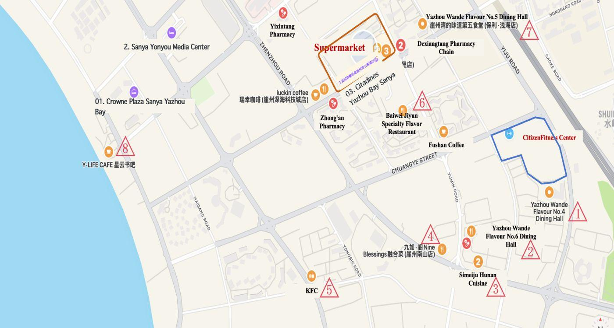
8. Essential Apps & Getting Around in China
We highly recommend setting up the following tools before your arrival:
Map of the area surrounding the competition venue：
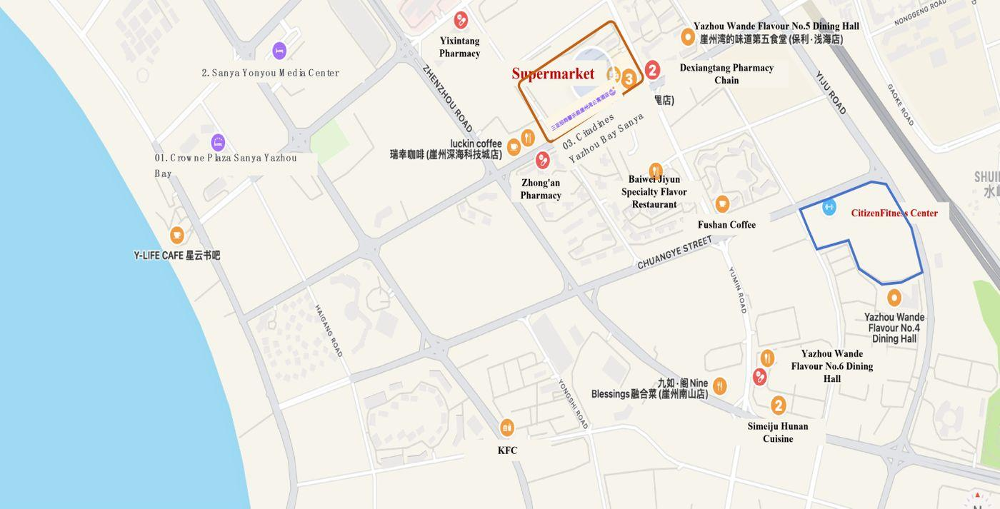
9. Communication Channels
Primary Communication: Official event announcements, schedule updates, and Q&A will be conducted via Microsoft Teams. Please ensure all team members have the app downloaded and are added to the official SAUVC 2026 Teams channel.
10. Key Roles & Emergency Contacts
If you have any questions or encounter issues during the event, please look for the designated committee members.
| Role | Name |
|---|---|
| General | Luyuan |
| Logistics | Xiaonan |
| Game Master | Rajat |
Xiaonan — 0898-31882503
11. Sponsors
We would like to extend our deepest gratitude to our sponsors and partners who made SAUVC 2026 possible.

Introduction to Harbin Engineering University South China Sea Research Institute
Harbin Engineering University originated from the PLA Military Engineering Institute (Harbin Military Engineering Institute) founded in 1953, with General Chen Geng as the first president. The university is one of the first institutions authorized to grant doctoral and master's degrees, a key university under the "211 Project", and a national "Double First-Class" construction university. It is now affiliated to the Ministry of Industry and Information Technology. Adhering to the school-running strategy of "Three Seas and One Nuclear" (shipbuilding industry, naval equipment, marine development, nuclear energy application), the university has made important contributions to China's shipbuilding industry, nuclear industry, national defense modernization, and economic and social development, and has become a high-level research university in China's ship, ocean, and nuclear fields.
The construction of Hainan Free Trade Port is a major national strategy personally planned, deployed, and promoted by General Secretary Xi Jinping. The establishment of the South China Sea Research Institute is an important measure for the university to actively serve national strategies, national defense needs, and local economic and social development, and to implement the instructions of the Ministry of Education and the Ministry of Industry and Information Technology. In accordance with the principles of "serving strategies, highlighting characteristics, opening up cooperation, and integrating development", the South China Sea Research Institute has in-depth cooperation with the Institute of Deep-sea Science and Engineering of the Chinese Academy of Sciences, China State Shipbuilding Corporation, Harbin Electric Group, and other units, joining the national deep-sea team to jointly accelerate the solution of "bottleneck" problems in national defense and industries, seize the commanding heights of scientific and technological innovation in the deep-sea field, and make contributions to the construction of Hainan Free Trade Port and the national defense construction of the South China Sea.
Harbin Engineering University South China Sea Research Institute (Harbin Engineering University Sanya South China Sea Innovation and Development Base) is co-founded by Harbin Engineering University, Hainan Provincial Department of Education, Sanya Municipal Government, and China Merchants Hainan. It is an important unit approved by the Ministry of Industry and Information Technology and supported by the Ministry of Education for Hainan's deepening of education reform and opening up. It is an important part of Harbin Engineering University's efforts to build a world-class university with distinctive characteristics.
Adhering to the principle of "meeting the needs of the country (Hainan) with the university's strengths", the South China Sea Research Institute is committed to promoting the innovation and application of deep-sea equipment technology, building a high-level industry-education integration talent training base, a high-level industrial incubation and innovation platform, and an international exchange and cooperation base.
Hainan Yuchi
Hainan Yuchi is founded in February 2023, located in Phase II, Deep-sea Equipment Industrial Park, Yazhou Bay Science and Technology City, Sanya. It is a high-tech enterprise key-supported by Hainan Provincial Deep-sea Technology Innovation Center.
The company has obtained full certification qualifications of the three management systems including ISO 9001 (Quality Management System), ISO 14001 (Environmental Management System) and ISO 45001 (Occupational Health and Safety Management System), as well as the national military standard certification of GJB 9001C (Military Quality Management System). It has built a comprehensive, standardized management and support system in line with domestic and international high-standard norms.
Boasting an experienced core team, the company possesses solid technical reserves and rich engineering practical experience in the field of deep-sea energy systems.
Business Scope
The company is engaged in the production, sales and after-sales service of power supply units for deep-sea equipment, storage batteries, deep-sea pressure-resistant high energy density battery packs, solar panels, UPS power supplies, battery cabins, power supply systems, UAV energy modules, multi-functional unmanned surface vehicle systems, floating and submerged buoy battery packs, and other related products.
It provides one-stop, full-lifecycle professional energy support services covering fault diagnosis, reliability assessment, operation and maintenance. The company also conducts non-standard environmental tests such as deep-sea pressure simulation and charge-discharge cycle testing, so as to verify the performance of battery systems under extreme working conditions.
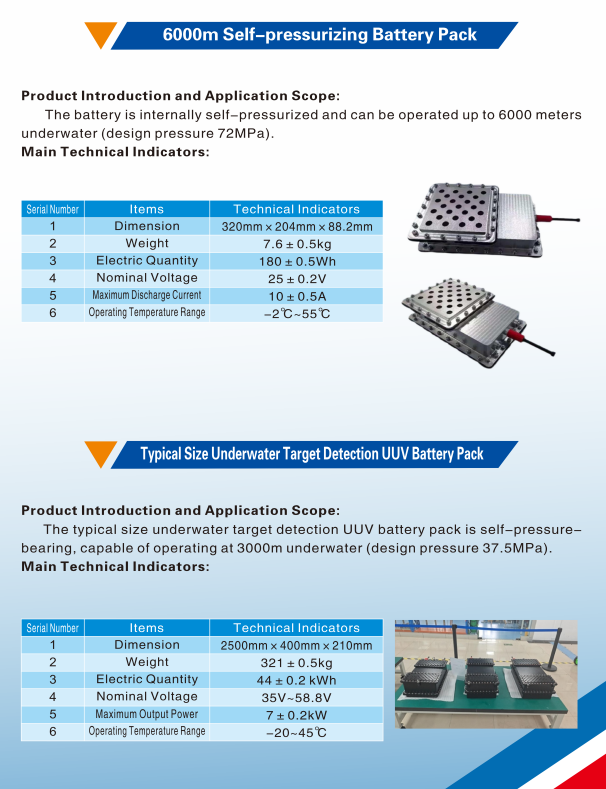
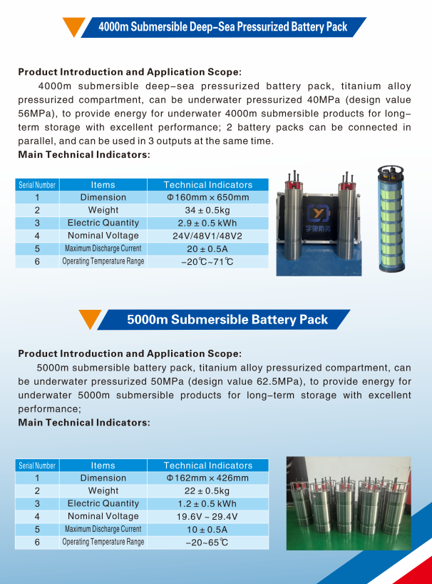
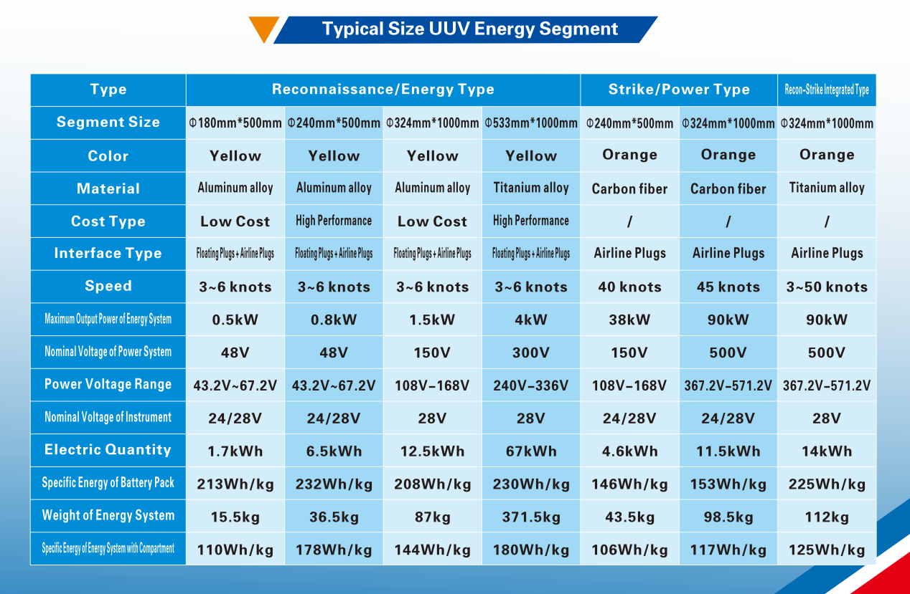
Application Scenarios
Full-ocean-depth AUV/ROV, abyssal landers, long-term deep-sea observation platforms, etc.; Deep-sea submerged buoys, underwater gliders, submarine observation network nodes, long-term fixed monitoring and detection equipment; Various unmanned underwater vehicles (UUVs), autonomous operation robots and other underwater equipment.
Introduction to Hainan Aerial Science and Technology Co., Ltd
Hainan Aerial Science and Technology Co., Ltd. was established on May 31, 2020, in Sanya Yazhou Bay Science and Technology City, a high-tech innovation hub of Hainan Free Trade Port. The company is a technology-driven enterprise integrating the R&D, production, and services of unmanned equipment. Leveraging its technological advantages in the cross-integration of "air-sea" domains and its geographic location at the gateway to the South China Sea, the company is committed to becoming a leading provider of low-altitude + marine products and services.
The company focuses on the niche area of tandem twin-rotor UAV technology and the marine application market for UAVs. It has formulated the first industry standard for UAVs in the marine sector, serving as a pioneer in the marine UAV niche and an innovator in the integrated development of "low-altitude + marine". In terms of scenario-based innovation, the company possesses a number of disruptive technologies, such as unmanned helicopter deployment and recovery of marine equipment, unmanned helicopter fish farm scouting, feeding, and express delivery, unmanned helicopter integrated marine survey and observation, and unmanned helicopter search, rescue, and transport of persons overboard.
The company has undertaken several major projects, including the Hainan Provincial Key R&D Program, Hainan Provincial Advanced Equipment First Set Demonstration, National Key R&D Program, National Major R&D Program, Hainan Provincial Marine Disaster Comprehensive Prevention and Control Construction Project, and the surface/air mobile carrier simulation system for a certain "proving ground" project. The company holds 20 invention patents and 15 software copyrights, has led or participated in the development of 17 standards, and has established a development strategy of "patents first, standards leading, brand shaping, and disruptive applications". It has won the second prize of the Chuangqingchun Hainan Competition and the Hainan Provincial Patent Excellence Award, among others. The company has grown into a technology-oriented SME, an innovative SME, a high-tech enterprise, and a provincial-level "Specialized, Refined, Distinctive, and Innovative" enterprise, demonstrating first-class R&D capabilities and niche market development strengths.
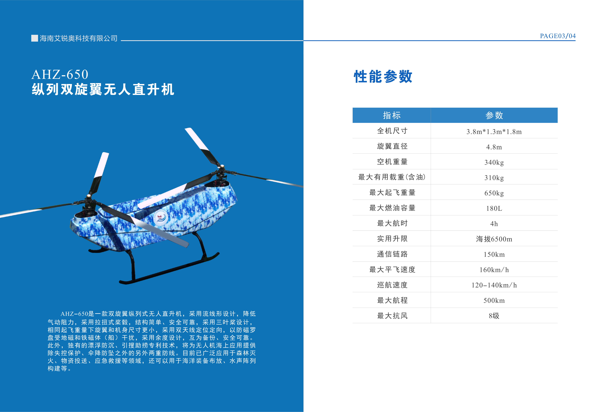
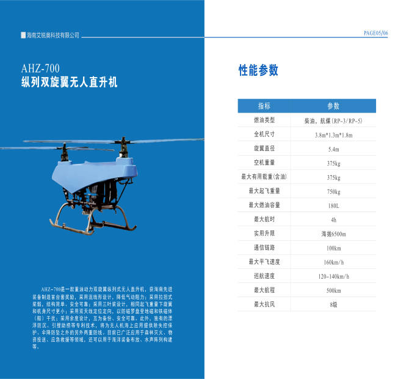
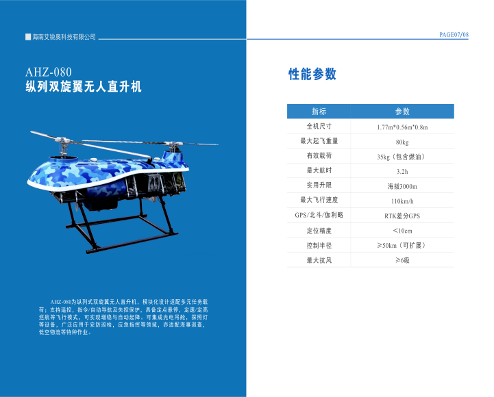
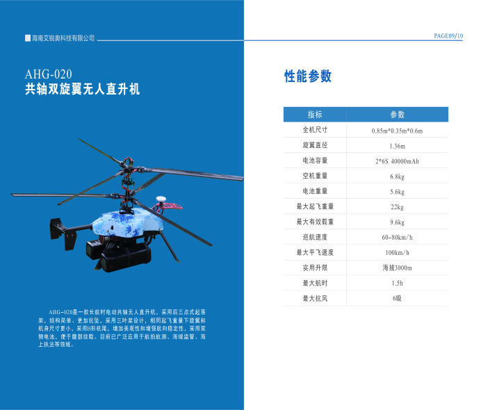
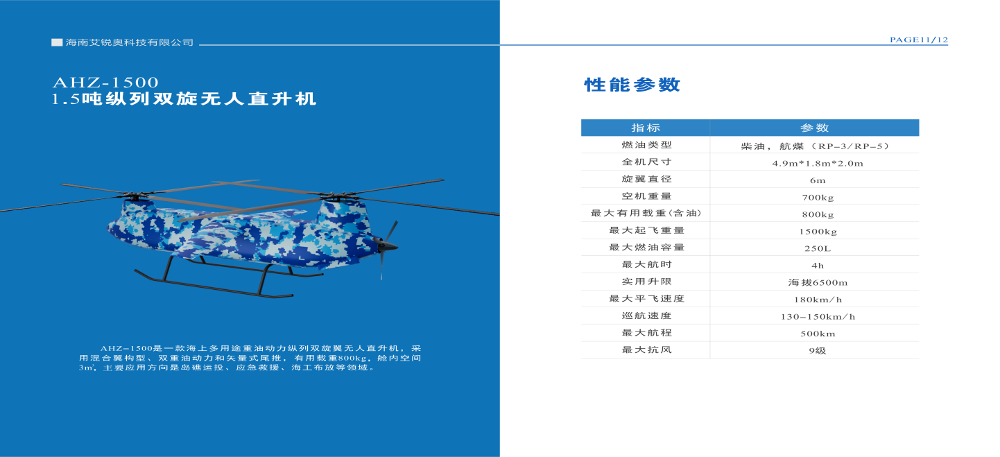
12. Booth Map
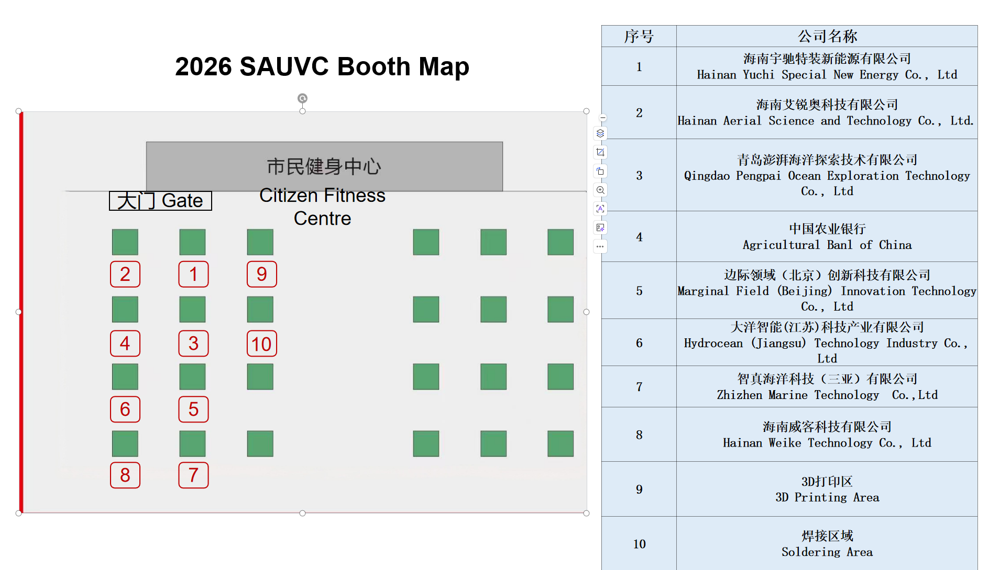
2026 SAUVC Booth Map
Appendix A: Day 1 Qualification Slot Assignments
| Time Slot | Lane 1 | Lane 2 |
|---|---|---|
| 09:40 – 10:00 | SG-07 Mecatron, Nanyang Technological University | |
| 10:00 – 10:20 | CN-88 GuangJiao Brigade, Guangzhou Maritime University | CN-77 WaterDrifter, Harbin Engineering University |
| 10:20 – 10:40 | IN-32 KURMA, Indian Institute of Technology - Roorkee | CN-113 EXNOTSMART, Dalian University of Technology |
| 10:40 – 11:00 | ID-35 BARELANG MARINE ROBOTICS TEAM-BUTTERBOT, Batam State Polytechnic | ID-82 N-AUV 3.2 (N7-AUV), Bogor Agricultural University |
| 11:00 – 11:20 | TW-16 ORCA AUV, National Yang Ming Chiao Tung University | CN-116 CangMing, Harbin Engineering University |
| 11:20 – 11:40 | IN-34 Aritra, Indian Institute of Technology Madras | TR-17 Alesta, Adana Science High School |
| 11:40 – 12:00 | CN-81 Three Water, South China University of Technology | IN-61 Dreadnought Robotics, Vellore Institute of Technology Chennai |
| 12:00 – 12:40 | LUNCH BREAK | |
| 12:40 – 13:00 | TR-68 ATK ROV, ÖZEL TEKNOLOJİ AFYONKARAHİSAR ORGANİZE SANAYİ BÖLGESİ MESLEKİ VE TEKNİK ANADOLU LİSESİ | ID-24 TECH_SAS, Telkom University |
| 13:00 – 13:20 | IN-02 TEAM NIRMA AUV, NIRMA UNIVERSITY | AU-05 Manta Claus, University of New South Wales |
| 13:20 – 13:40 | ID-36 BARELANG MARINE ROBOTICS TEAM-OCTOBOT, Batam State Polytechnic | ID-87 Amarine, Universitas Brawijaya |
| 13:40 – 14:00 | ID-83 N-AUV 4 (N8-AUV), Bogor Agricultural University | ID-37 Narwhal AUV, Universitas Gadjah Mada |
| 14:00 – 14:20 | TR-99 MYS ABDÜLHAMİD, Selcuk University | ID-93 Orca, Gadjah Mada University |
| 14:20 – 14:40 | CN-94 SmartNav Deep Dive Team | CN-50 Electronic Vision AUV |
| 14:40 – 15:00 | ID-92 SeaDiver, Universitas Negeri Surabaya | ID-25 FIToplankton, Telkom University |
| 15:00 – 15:20 | IN-41 Brahmputra, Birla Vishvakarma Mahavidyalaya | SG-27 Aquanox, Singapore Polytechnic |
| 15:20 – 15:40 | IN-90 Team Utkarsh, Ganpat University - U.V. Patel College Of Engineering | RU-14 Hydronautics, Bauman Moscow State Technical University |
| 15:40 – 16:00 | CN-85 Deep-Dive Intelligence | MY-26 UTM OCEANVISION, Universiti Teknologi Malaysia |
| 16:00 – 16:20 | IN-01 AUVMEC, Mahindra University | AU-08 sUNSWim, University of New South Wales |
| 16:20 – 16:40 | IN-73 Team Nira, Indian Institute of Information Technology, Design and Manufacturing, Kancheepuram | TR-98 MYS YILDIRIM, Selcuk University |
| 16:40 – 17:00 | IN-20 Team Tiburon, National Institute of Technology, Rourkela | TR-09 CALROV, Cagaloglu Anatolian High School |
| 17:00 – 17:20 | TR-110 1.5 ADANA SGM AITO, Cukurova University | CN-91 T-Group, Northwestern Polytechnical University |
| 17:20 – 17:40 | IN-04 HydroHeroes, Muthoot Institute of Technology and Science | IN-112 Team VAUV, Vellore Institute of Technology, Vellore |
13. Frequently Asked Questions (FAQs)
Q: Any recommendations on payment modes, apps and sims in China?
These are just our recommendations based on information received, and it would be best if you can do your own research on this too:
- For ride hailing, you can consider using DiDi as an option. You can check out this article for info: https://share.google/5DR4I7cyNprxakPaP
- The most recommended app for Maps in China is AMaps, better than Google Maps. Apple Maps works, but may be missing some features — however, it allows you to sometimes book rides directly. A useful article: https://share.google/LYeF3OKsCaZ7nVi9F
- It is possible to buy an inexpensive e-SIM (specifically Airalo) for use in China, or sometimes even roaming services (like Simba from Singapore) which may allow access to Google services like Gmail and Google Maps, and even WhatsApp.
- Here are some tips on how to pay cashless in China: https://share.google/3qpZsHJWzPVjIPMpt
- Visa/Mastercard based payments usually work, but if you want to be safe on this, you can install Alipay (but its setup requires a whole bunch of permissions).
- Withdrawing cash from an ATM in China is easiest if your card has a UnionPay, Cirrus or PLUS logo. Many ATMs may work with Mastercard or VISA cards also.
Q: How do we get around Sanya and to the hotel?
We had provided a transportation guide which you may use as a guideline for directions from the airport to the competition venue. Try to see if you can download the application Didi, which allows you to book taxis to get around.
Q: For the payment procedure for the booked accommodation, is the payment to be made through the SAUVC organizers or directly to the hotel?
All hotel payments and communication are to be made directly with the hotel. We are only helping facilitate that to make your job easier, but please treat it as a regular hotel booking.
Q: Who is the contact at the hotel to talk to regarding additional arrangements?
To communicate with the hotel, please try calling the number provided on the booking given to you, and on the booking information form. At the moment, that is our only contact with the hotel too. We are not sure if the hotel's email is available online.
Q: Will transportation be arranged from the airport to the hotel and back?
We (SAUVC organizers) will not be arranging any transfer of this sort per se. If interested, you can reach out to the hotel to see if this option will be possible.
Q: Will transport be provided between the hotel and the competition venue during the event?
Not as far as we know.
Q: Will meals be provided for participants? If so, please specify which meals are included.
As communicated in an email, up to 6 people in each team will be provided meals for 2 days for free. If you need food for more than 6 pax, you can indicate this to us earlier via the form which will be sent to you, and there will be a provider at the venue who you can buy it from.
Q: Are there any issues if we bring lithium batteries with us when traveling to China for the competition? Are there any restrictions or required documents for bringing lithium batteries into China? Could you please advise on the recommended process and any constraints we should be aware of?
We recommend that you check with your airline early on regarding these restrictions, as usually they are the ones who will impose strict regulations regarding battery capacity and types that can be brought onboard the flight.
It would be good to have your material safety datasheets for the batteries with you, as they may ask for them.
If you are considering buying batteries from a vendor in China, one vendor option you can consider using is Witkey Ocean (witkeyma@163.com). Please note that this vendor does not represent SAUVC, but he is familiar with the competition and may be able to help you. You can discuss possible options to acquire, dispose, or rent batteries from him. It is completely up to you whether you would like to use him.
Q: Is there a possibility for teams to order batteries through the organizing team from any online platforms available in China?
Unfortunately, the organizing team is unable to handle the logistics and complications of ordering for teams, and would not be able to do this for you.
Q: Alternatively, can we place an order from our country and have the batteries delivered directly to the competition venue in Sanya?
It would not be straightforward for the organizer or venue to keep track of your deliveries at the venue. You may consider getting it delivered to your hotel room the day you arrive, at your own risk. You can try contacting the hotel to see if the reception can receive your package for you.
You may check out the Reddit thread here for some tips we had given during previous SAUVCs: https://www.reddit.com/r/SAUVC/comments/ca630g/how_do_we_manage_transporting_batteries_to/
Q: Our AUV utilizes a mechanism for the dropping task that involves a chain coiled around a robotic arm. During the mission, this chain is deployed and dropped into the target drum. Does the deployed/hanging chain count toward the maximum allowable dimensions of the AUV during the run?
The dimensions are based on the measurements of the robot at the time of deployment. If the chain is inside the chassis at the time of deployment, it won't count towards the measurement, but remember that the measurement will include the full dimensions of the AUV including any hanging/protruding parts during deployment. It is okay if the chain is protruded during the run.
For the ball drop task: note that the ball has to be completely disconnected from the vehicle and only then will it be considered as ball drop task completed.
Q: Ground Contact: The rulebook states that a penalty is incurred if the robot touches the pool floor. If the deployed chain inadvertently makes contact with the ground while being dropped into the drum, will this be considered a violation or result in a disqualification/penalty?
Yes, this will be considered as the robot touching the pool floor, and incur a penalty/disqualification in the same way. This is also partly covered in the rulebook.